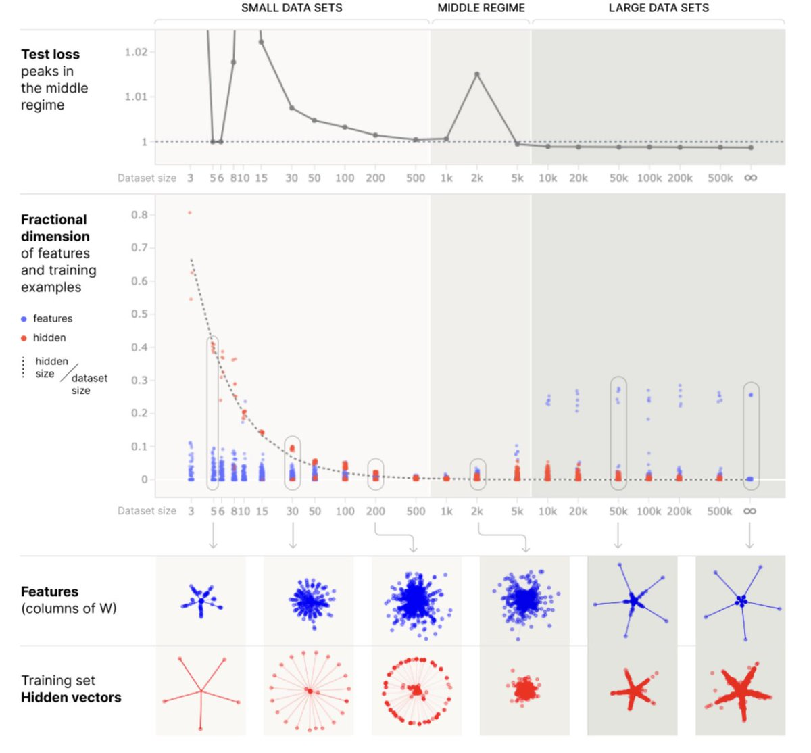

Appendix 2: Discussions on LLMs
⌛ Estimated Reading Time: 21 minutes. (4131 words)
Current LLMs, although trained on abundant data, are still far from perfect.
Will these problems persist in future iterations, or will they disappear? This section examines the main criticisms of those models and tries to determine if they are valid even for future LLMs.
This kind of qualitative assessment is important to know whether LLMs represent the most likely route to AGI or not.
Empirically insufficiency?
Do LLMs empirically not work as expected or fall short in practice? This section opens the discussion and examines some essential aspects of LLMs that may be missing to create a transformative AI.
Creativity?
The creativity of LLMs is often debated, but there are clear indications that AI, in principle, is capable of creative processes in various ways:
-
Autonomous Scientific Research: Recent advancements have shown that LLMs can indeed make novel discoveries. For instance, a study by DeepMind demonstrated that an LLM "discovered new solutions for the cap set problem, a long-standing open problem in mathematics," which was a favorite open problem of Terence Tao. This indicates that AI can not only understand existing knowledge but also contribute new insights in complex fields like mathematics.
-
Autonomous Discovery: AI has the capability to rediscover human strategies and openings independently. AlphaGo, for example, rediscovered human Go strategies and openings through self-play, without any human data input. This demonstrates an AI's ability to independently learn and innovate within established domains.
-
Creative Optimization: AI can optimize in surprisingly creative ways. The phenomena of specification gaming, where AI finds unintended solutions to problems, illustrate this. Although this unpredictability poses its challenges, it also shows that AI systems can come up with novel, creative solutions that might not be immediately obvious or intuitive to human problem solvers. DeepMind's blog post on Specification Gaming illustrates this point vividly.
Slow Learning Speed?
The slow learning speed of LLMs compared to humans is often highlighted. It's typically said that to increase performance in new tasks or situations, LLMs require training on vast amounts of data — millions of times more than a human would need. However, there's a growing belief that data efficiency can be significantly improved in future models.
EfficientZero is a reinforcement learning agent that surpasses median human performance on a set of 26 Atari games after just two hours of real-time experience per game. (source) This is a considerable improvement over previous algorithms, showcasing the potential leaps in data efficiency. The promise here is not just more efficient learning but also the potential for rapid adaptation and proficiency in new tasks, akin to a child's learning speed. EfficientZero is not an LLM, but it shows that deep learning can sometimes be made efficient.
Scaling laws indicate that larger AIs tend to be more data efficient, requiring less data to reach the same level of performance as their smaller counterparts. Papers such as "Language Models are Few-Shot Learners" and the evidence that larger models seem to take less data to reach the same level of performance, suggest that as models scale, they become more proficient with fewer examples. This trend points towards a future where AI can rapidly adapt and learn from limited data, challenging the notion that AIs are inherently slow learners compared to humans.
Non-Robust?
While it is true that AI has not yet achieved maximal robustness, for example being able to perform perfectly after a distributional change, there has been considerable progress:
-
Robustness correlates with capabilities: Robustness is closely linked to the capabilities of AI models when AIs are trained on difficult tasks. For instance, there is a significant improvement in robustness and transfer learning from GPT-2 to GPT-4. In computer vision, recent models like Segment Anything (source) are far more robust and capable of transfer learning than their less capable predecessors. This progression isn't due to any mysterious factors but rather a result of scaling and improving upon existing architectures.
-
Robustness is a continuum, and perfect robustness may be not necessary: Robustness in AI should not be viewed as a binary concept, but rather as existing on a continuum. This continuum is evident in the way AI models, like those in image classification, often surpass human performance in both capability and robustness (source). However, it's important to recognize that no system is completely immune to challenges such as adversarial attacks. This is exemplified by advanced AIs like Katago in Go, which, despite being vulnerable to such attacks, still achieves a superhuman level of play. However, the quest for perfect robustness may not be essential to create capable transformative AI, as even systems with certain vulnerabilities can achieve superhuman levels of competence. However, while robustness may not be necessary to create capable AI, the creation of safe, aligned AI will have to solve the problem of misgeneralizing goals.
Shallow Understanding?
Stochastic Parrots: Do AIs only memorize information without truly compressing it?
For example, François Chollet said (tweet): “Unfortunately, too few people understand the distinction between memorization and understanding. It's not some lofty question like "does the system have an internal world model?", it's a very pragmatic behavior distinction: "is the system capable of broad generalization, or is it limited to local generalization?”. François Chollet then listed papers aiming to show that LLMs do not really understand. (source) There is a small informal commentary on this list at this link.
There are two archetypal ways to represent information in an LLM: either memorize point by point, like a look-up table, or compress the information by only memorizing higher-level features, which we can then call “the world model”. This is explained in the very important paper "Superposition, Memorization, and Double Descent": it turns out that to store points, initially the model learns the position of all the points (pure memorization), then, if we increase the number of points, the model starts to compress this knowledge, and the model is now capable of generalization (and implements a simple model of the data).

Figure: From Superposition, Memorization, and Double Descent (source)
AI is capable of compressing information, often in a relevant manner. For example, when examining the representations of words representing colors in LLMs like “red” and “blue”, the structure formed by all the embeddings of those colors creates the correct color circle (This uses a nonlinear projection such as a T-SNE to project from high-dimensional space to the 2D plane). Other examples of world models are presented in (source). Of course, there are other domains where AI resembles more of a look-up table, but it is a spectrum, and each case should be examined individually. For instance, for "factual association," the paper “Locating and Editing Factual Associations in GPT” shows that the underlying data structure for GPT-2 is more of a look-up table (source), but the paper “Emergent Linear Representations in World Models of Self-Supervised Sequence Models” demonstrates that a small GPT is capable of learning a compressed world model of OthelloGpt. (source) There are more examples in the section dedicated to world models in the paper “Eight Things to Know about Large Language Models” (source).
It’s clear that LLMs are compressing their representations at least a bit. Many examples of impressive capabilities are presented in the work "The Stochastic Parrot Hypothesis is debatable for the last generation of LLMs", which shows that it cannot be purely a memorization. (source)
Will LLMs Inevitably Hallucinate?
LLMs are prone to "hallucinate," a term used to describe the generation of content that is nonsensical or factually incorrect in response to certain prompts. This issue, highlighted in studies such as "On Faithfulness and Factuality in Abstractive Summarization" by Maynez et al. and "TruthfulQA: Measuring How Models Mimic Human Falsehoods" by Lin et al., poses a significant challenge. However, it's important to see that these challenges are anticipated due to the training setup and can be mitigated:
-
Inherent Bias in Source Texts: One of the fundamental reasons LLMs may produce untrue content is training data, which may not always be entirely factual or unbiased. In essence, LLMs are reflecting the diverse and sometimes contradictory nature of their training data. In this context, LLMs are constantly 'hallucinating', but occasionally, these hallucinations align with our perception of reality.
-
Strategies to Enhance Factual Accuracy: The tendency of LLMs to generate hallucinations can be significantly diminished using various techniques. See the box below for a breakdown of those.
-
Larger models can be more truthful than smaller ones. This is the case with TruthfulQA. OpenAI reports that GPT-4 is 40% more accurate and factually consistent than its predecessor.
Many techniques can be used to increase the truthfulness of LLMs
-
Fine-tuning LLMs for Factuality: In this paper (link), the authors recommend fine-tuning methods using Direct Preference Optimization (DPO) to decrease the rate of hallucinations. By applying such techniques, a 7B Llama 2 model saw a 58% reduction in factual error rate compared to its original model.
-
Retrieval Augmented Generation (RAG). This method works by incorporating a process of looking up real-world information (retrieval, like a Google search) and then using that information to guide the AI's responses (generation, based on the document retrieved). By doing so, the AI is better anchored in factual reality, reducing the chances of producing unrealistic or incorrect content. Essentially, it's like giving the AI a reference library to check facts against while it learns and responds, ensuring its output is more grounded in reality. This approach is particularly useful in the context of in-context learning, where the AI learns from the information and context provided in each interaction.
-
Prompting techniques in AI have evolved to include sophisticated methods like
-
Consistency checks (source), that involve comparing the output from multiple instances of the model on the same prompt, identifying and resolving any disagreements in the responses. This method enhances the accuracy and credibility of the information provided. For instance, if different iterations of the model produce conflicting answers, this discrepancy can be used to refine and improve the model's understanding.
-
Reflexion. The Reflexion technique ("Reflexion: Language Agents with Verbal Reinforcement Learning"): It’s possible to simply ask the LLM to take a step back, to question whether what it has done is correct or not, and to consider ways to improve the previous answer, and this enhances a lot the capabilities of GPT-4, and this technique is emergent and does not work well with previous models. (source).
-
verification chains, like selection inference (source). Chain-of-Thought has access to the whole context, so each reasoning step is not necessarily causally connected to the last. But selection inference enforces a structure where each reasoning step necessarily follows from the last, and therefore the whole reasoning chain is causal. This process involves the AI model examining its own reasoning or the steps it took to arrive at a conclusion. By doing so, it can verify the logic and consistency of its responses, ensuring they are well-founded and trustworthy.
-
Allowing the AI to express degrees of confidence in its answers, acknowledging uncertainty when appropriate. For instance, instead of a definitive "Yes" or "No," the model might respond with "I am not sure," reflecting a more nuanced understanding akin to human reasoning. This approach is evident in advanced models like Gopher (source), which contrasts with earlier models such as WebGPT which may not exhibit the same level of nuanced responses.
-
-
Process-based training ensures that the systems are accustomed to detailing their thoughts in much greater detail and not being able to skip too many reasoning steps. For example, see OpenAI’s Improving Mathematical Reasoning with process supervision (source).
-
Training for metacognition: Models can be trained to give the probability of what they assert, a form of metacognition. For instance, the paper "Language Models (Mostly) Know What They Know" (source) demonstrates that AIs can be Bayesian calibrated about their knowledge. This implies that they can have a rudimentary form of self-awareness, recognizing the likelihood of their own accuracy. Informally, this means it is possible to query a chatbot with "Are you sure about what you are telling me?" and receive a relatively reliable response. This can serve as training against hallucinations.
It's worth noting that these techniques enable substantial problem mitigation for the current LLMs, but they don’t solve all the problems that we encounter with AI that are potentially deceptive, as we will see in the chapter on goal misgeneralization.
Structural inadequacy?
Missing System 2? System 1 and System 2 are terms popularized by economist Daniel Kahneman in his book "Thinking, Fast and Slow," describing the two different ways our brains form thoughts and make decisions. System 1 is fast, automatic, and intuitive; it's the part of our thinking that handles everyday decisions and judgments without much effort or conscious deliberation. For instance, when you recognize a face or understand simple sentences, you're typically using System 1. On the other hand, System 2 is slower, more deliberative, and more logical. It takes over when you're solving a complex problem, making a conscious choice, or focusing on a difficult task. It requires more energy and is more controlled, handling tasks such as planning for the future, checking the validity of a complex argument, or any activity that requires deep focus. Together, these systems interact and influence how we think, make judgments, and decide, highlighting the complexity of human thought and behavior.
A key concern is whether LLMs are able to emulate System 2 processes, which involve slower, more deliberate, and logical thinking. Some theoretical arguments about the depth limit in transformers show that they are provably incapable of internally dividing large integers (source). However, this is not what we observe in practice: GPT-4 is capable of detailing some calculations step-by-step and obtaining the expected result through a chain of thought or via the usage of tools like a code interpreter.
Emerging Metacognition. Emerging functions in LLMs, like the Reflexion technique (source), allow these models to retrospectively analyze and improve their answers. It is possible to ask the LLM to take a step back, question the correctness of its previous actions, and consider ways to improve the previous answer. This greatly enhances the capabilities of GPT-4, enhancing its capabilities and aligning them more closely with human System 2 operations. Note that this technique is emergent and does not work well with previous models.
These results suggest a blurring of the lines between these two systems. System 2 processes may be essentially an assembly of multiple System 1 processes, appearing slower due to involving more steps and interactions with slower forms of memory. This perspective is paralleled in how language models operate, with each step in a System 1 process akin to a constant time execution step in models like GPT. Although these models struggle with intentionally orchestrating these steps to solve complex problems, breaking down tasks into smaller steps [Least to most prompting] or prompting them for incremental reasoning [Chain of Thought] significantly improves their performance.
Missing World Model?
The notion of a "world model" in AI need not be confined to explicit encoding within an architecture. Contrary to approaches like H-JEPA (source), which advocate for an explicit world model to enhance AI training, there's growing evidence that a world model can be effectively implicit. This concept is particularly evident in reinforcement learning (RL), where the distinction between model-based and model-free RL can be somewhat misleading. Even in model-free RL, algorithms often implicitly encode a form of a world model that is crucial for optimal performance.
-
Time and geographical coordinates: Research on Llama-2 models reveals how these models can represent spatial and temporal information (source). LLMs like Llama-2 models encode approximate real-world coordinates and historical timelines of cities. Key findings include the gradual emergence of geographical representations across model layers, the linearity of these representations, and the models' robustness to different prompts. Significantly, the study shows that the models are not just passively processing this information but actively learning the global geometry of space and time.
-
Board representation: In the paper “Emergent Linear Representations in World Models of Self-Supervised Sequence Models” (source), the author presents significant findings on the nature of representations in AI models. The paper delves into how the Othello-GPT model, trained to predict legal moves in the game of Othello, develops an emergent world representation of the game board! Contrary to previous beliefs that this representation was non-linear, he demonstrates that it is, in fact, linear. He discovers that the model represents board states not in terms of black or white pieces, but as "my color" or "their color," aligning with the model's perspective of playing both sides. This work sheds light on the potential of AI models to develop complex, yet linear, world representations through simple objectives like next-token prediction.
-
Other examples are presented in the paper: “Eight Things to know about LLMs”. (source)
Continual Learning & Long-Term Memory in AI?
Continual learning and the effective management of long-term memory represent significant challenges in the field of AI.
A crucial obstacle in this area is catastrophic forgetting, a phenomenon where a neural network, upon learning new information, tends to entirely forget previously learned information. This issue is an important focus of ongoing research, aiming to develop AI systems that can retain and build upon their knowledge over time. For example, suppose we train an AI on an Atari game. At the end of the second training, the AI has most likely forgotten how to play the first game. This is an example of catastrophic forgetting.
But now suppose we train a large AI on many ATARI games, simultaneously, and even add some Internet text and some robotic tasks. This can just work. For example, the AI GATO is an example of such a training process and exemplifies what we call the blessing of scale, which is that what is impossible in small regimes can become possible in large regimes.
Other techniques are being developed to solve long-term memory, for example, Scaffolding-based approaches have also been employed for achieving long-term memory and continual learning in AI. Scaffolding in AI refers to the use of hard-coded wrappers explicitly programmed structures by humans that involve a for loop to query continuously the model:
-
LangChain addresses these challenges by creating extensive memory banks. LangChain is a Python library that allows LLM to retrieve and utilize information from large datasets, essentially providing a way for AI to access a vast repository of knowledge and use this information to construct more informed responses. However, this approach may not be the most elegant due to its reliance on external data sources and complex retrieval mechanisms. A potentially more seamless and integrated solution could involve utilizing the neural network's weights as dynamic memory, constantly evolving and updating based on the tasks performed by the network.
-
Voyager: A remarkable example of a scaffolding-based long-term memory is the AI Voyager, an AI system developed under the "AutoGPT" paradigm. This system is notable for its ability to engage in continuous learning within a 3D game environment like Minecraft. In a single game session, AI Voyager demonstrates the capacity to learn basic controls, achieve initial goals such as resource acquisition, and eventually advance to more complex behaviors, including combat with enemies and crafting tools for gathering sophisticated resources. This demonstrates a significant stride in LLM's ability to learn continually and manage long-term memory within dynamic environments.
It should be noted that scaffold-based long-term memory is not considered an elegant solution, and purists would prefer to use the system's own weights as long-term memory.
Planning
Planning is an area that AIs currently struggle with, but there is significant progress. Some paradigms, such as those based on scaffolding, enable task decomposition and breaking down objectives into smaller, more achievable sub-objectives.
Furthermore, the paper “Voyager: An Open-Ended Embodied Agent with Large Language Models” demonstrates that it is possible to use GPT-4 for planning in Natural language in Minecraft. (source)
Differences with the brain
It appears that there are several points of convergence between the LLMs and the linguistic cortex:
-
Behavioral similarities. From (source), it's highlighted that LLMs show a close comparison to human linguistic abilities and the linguistic cortex. These models have excelled in mastering syntax and a significant portion of semantics in human language. Of course, today, they still lag in aspects such as long-term memory, coherence, and general reasoning - faculties that in humans depend on various brain regions like the hippocampus and prefrontal cortex, but we explained in the last sections that those problems may be solvable.
-
Convergence in internal Representations: LLMs have a representation that converges with scale toward the brain representation. This is supported by the study, "Brains and algorithms partially converge in natural language processing." (source) Additional insights can be found in the works "The Brain as a Universal Learning Machine" (source) and "Brain Efficiency: Much More than You Wanted to Know." (source) At comparable learning stages, LLMs and the linguistic cortex develop similar or equivalent feature representations. In some evaluations, advanced LLMs have been able to predict 100% of the explainable neural variance, as detailed by Schrimpf, Martin, et al. in "The neural architecture of language: Integrative modeling converges on predictive processing." (source)
-
Scale is also important in primates. The principal architectural difference between human and other primate brains seems to be the number of neurons rather than anything else, as demonstrated in various studies. (source) (source) (source).
Further reasons to continue scaling LLMs
Following are some reasons to believe that labs will continue to scale LLMs.
Scaling Laws on LLM implies further qualitative improvements. The scaling laws might not initially appear impressive. However, linking these quantitative measures can translate to a qualitative improvement in algorithm quality. An algorithm that achieves near-perfect loss, though, is one that necessarily comprehends all subtleties, and displays enormous adaptability. The fact that the scaling laws are not bending is very significant and means that we can make the model a qualitatively better reasoner.
From simple correlations to understanding. During a training run, GPTs go from basic correlations to deeper and deeper understanding. Initially, the model merely establishes connections between successive words. Gradually, it develops an understanding of grammar and semantics, creating links between sentences and subsequently between paragraphs. Eventually, GPT masters the nuances of writing style1.
!!! note “Exercise: Scaling Laws on LLM implies further qualitative improvements.”
Let's calculate the difference in loss, measured in bits, between two model outputs: "Janelle ate some ice cream because he likes sweet things like ice cream." and "Janelle ate some ice cream because she likes sweet things like ice cream.” The sentence contains approximately twenty tokens. If the model vacillates between "He" or "She," choosing randomly (50/50 odds), it incurs a loss of 2 bits on the pronoun token when incorrect. The loss for other tokens remains the same in both models. However, since the model is only incorrect half the time, a factor of 1/2 should be applied. This results in a difference of (1/2) * (2/20) = 1/20, or 0.05 bits. Thus, a model within 0.05 bits of the minimal theoretical loss should be capable of understanding even more nuanced concepts than the one discussed above.
Text completion is probably an AI-complete test (source).
Current LLMs have only as many parameters as small mammals have synapses, no wonder they are still imperfect. Models like GPT-4, though very big compared to other models, should be noted for their relatively modest scale compared to the size of a human brain. To illustrate, the largest GPT-3 model has a similar number of parameters to the synapses of a hedgehog. We don't really know how many parameters GPT-4 has, but if it is the same size as PALM, which has 512 B parameters, then GPT-4 has only as many parameters as a chinchilla has synapses. In contrast, the human neocortex contains about 140 trillion synapses, which is over 200 times more synapses than a chinchilla. For a more in-depth discussion on this comparison, see the related discussion here. For a discussion of the number of parameters necessary to emulate a synapse, see [Ajeya].
GPT-4 is still orders of magnitude cheaper than other big science projects.: Despite the high costs associated with training large models, the significant leaps in AI capabilities provided by scaling justify these costs. For example, GPT-4 is expensive compared to other ML models. It is said to cost 50M in training [source]. But the Manhattan Project cost 25B, which is 500 times more without accounting for inflation, and achieving Human-level intelligence, may be more economically important than achieving the nuclear bomb.
Collectively, these points support the idea that AGI it is plausible that AGI can be achieved by only scaling current algorithms.
-
See also "The Scaling Hypothesis," to delve into this progression in a fascinating story. ↩